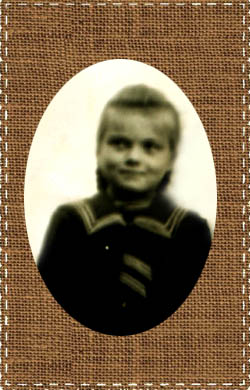
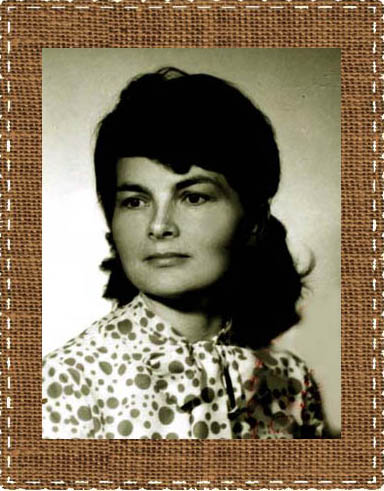
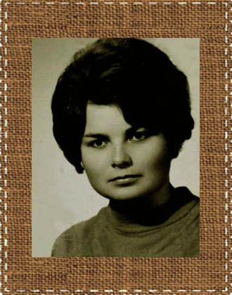
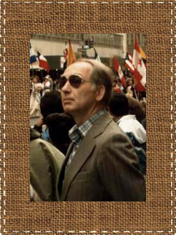
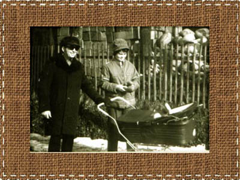
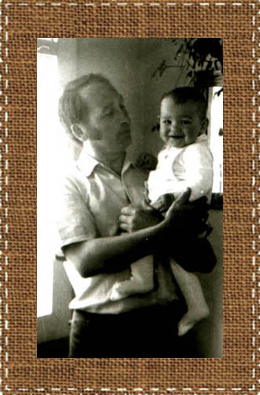
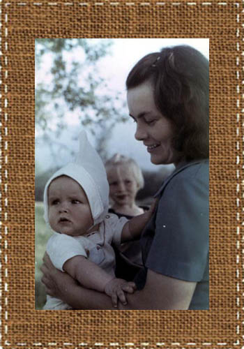
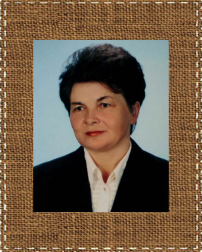
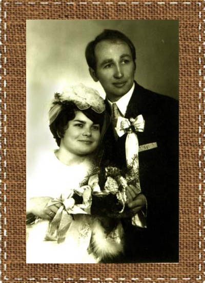

Zofia Sawicka
Zofia w młodości.
Zofia.
Tadeusz Klimara.
Młodzi Klimarowie z pierwszą córeczką Renatą.

Tadeusz z córką Renatą.
Zofia z córkami Renatą i Małgorzatą.
Zofia.
Zofia Sawicka urodziła się 02.04.1950 roku w Bejscach. Ukończyła miejscową szkołę podstawową, a następnie w latach 1964-1969 uczyła się w Państwowym Technikum Rolniczym w Czernichowie koło Krakowa. Po maturze wyjechała do Krakowa, gdzie podjęła pracę księgowej w Krakowskim Przedsiębiorstwie Remontowo-Budowlanymi. Tam też poznała Tadeusza Klimarę, kierownika stolarni. Tak naprawdę Tadeusz był artystą stolarzem, ale w tych czasach trudno było wyżyć z samego talentu, stąd praca etatowa.
Zofia wpadła mu w oko, bo była kobietą niezwykłą. Ładna, zawsze uśmiechnięta, pogodna i życzliwa, a przy tym prawdziwa gospodyni domowa - od najmłodszych lat potrafiła gotować, piec, zajmować się domem i gospodarstwem. Nic dziwnego, że zauroczyła nie tylko Tadeusza. Wielu mężczyzn marzyło, by została ich zoną, ale rozsądna Zosia czekała na kogoś, kogo pokocha szlachetnie i na zawsze.
Dojrzały, rozumny i odpowiedzialny Tadeusz spodobał się jej, a i on dostrzegł w niej wszystkie zalety.
Pobrali się w 1971 roku w Bejscach. Oczywiście nie obyło się bez lokalnego zgrzytu - miejscowa panna powinna szukać kawalera pośród swoich, a nie gdzieś w górach. Tadeusz pochodził bowiem z Beskidów, a to bejskiej społeczności nie do końca się podobało.
Ale młodzi byli nieulegli i stanęli na ślubnym kobiercu. Uroczystość zgromadziła liczną rodzinę, sąsiadów, przyjaciół i znajomych, a do tańca przygrywała słynna kapela bejska Fularów. Babcia Hanna Niziołkowa, primo voto Sawicka, przybyła na tę uroczystość z odległego Czaplinka, by jak zwykle wszystkim sterować i zachęcać do zabawy. Była tak zwaną starościną wesela, a to rola niezwykle ważna.
Zofia i Tadeusz.
Po ślubie młodzi zamieszkali w domu rodzinnym pana młodego w Lubniu, a następnie - w latach 1972-1977- mieszkali w Zakopanem, na Olczy. Tadeusz trudnił się renowacją starych mebli oraz wytwarzaniem drewnianej galanterii w stylu zakopiańskim, a Zofia zajmowała się dziećmi.
Wynajmowali przytulne mieszkanie, ale bez wody. Trzeba było nosić ją z podwórka na pierwsze piętro. W końcu jednak Tadeusz wodę doprowadził, bo przy dwójce małych dzieci było to niezbędne. Tadeusz cały dzień pracował, a młoda mama musiała radzić sobie sama w obcym miejscu, z dala od bliskich. Zapewne nie raz tęskniła za kimś, kto wsparłby ją w codziennym zmaganiu, ale też nigdy nie dała poznać, że jest jej ciężko. Ale nie mogła się poddać, bo miała już dwójkę dzieci.
Nie mogę tutaj nie wspomnieć o pewnej historii związanej z pierwszą ciążą Zosi. Otóż w tych latach z zapałem chodziłam po górach, głównie Tatrach. I tak się jakoś złożyło, że namówiłam Zofię i Tadeusza na "krótki spacerek". W rzeczywistości była to wyprawa na Halę Gąsiennicową! Z Zazadniej, przez Gęsią Szyję, Boczań... Zosia w gustownej ciążowej sukience w tygrysie wzory i w wygodnych bucikach na kaczuszce (niski obcas) dzielnie ten szlak przeszła. Był już koniec sierpnia, ciąża mocno zaawansowana, a droga trochę forsowna. Myślę dziś, że właśnie dzięki tej męczącej eskapadzie wkrótce bez kłopotów urodziła się zdrowa i ładna córeczka Renata!
Był 1973 rok. Renatka ładnie rosła i nie sprawiała kłopotów, poza tym, że nie lubiła przeżuwać. Jeśli o 9 rano dostała kawałek chleba, to mogła trzymać w ustach ten kęs do południa. I nic nie zmusiło ją do szybszego tempa..
W 1974 roku, także w Zakopanem, urodziła się druga córka - Małgorzata. Dziecię było nadzwyczaj dzielne i przedsiębiorcze. Przetrzymało nawet bez skargi , swój chrzest - w ten dzień, 26 grudnia, był tak ulewny deszcz, że nie dało się przejść z samochodu do kościoła. A Gosia nawet nie zapłakała!
W 1977 roku Zofia i Tadeusz wrócili do Lubnia – rodzinnej miejscowości Tadeusza. Jego rodzice potrzebowali już wsparcia, a Tedeusz marzył o swojej stolarni. Tym bardziej, że jego ojciec również był stolarzem, bardzo szanowanym i znanym w okolicy, zatem gotowe miejsce pracy czekało na nowego gospodarza.
Tadeusz zajął się tym, co lubił najbardziej, a Zofia wychowywała dzieci, ale też pracowała w Urzędzie Gminy Lubień jako księgowa. Tu dodać należy, iż każdego dnia przemierzała pieszo spory kawałek drogi - do pracy w jedną stronę szła 45 minut!
W 1980 roku urodziła się trzecia córka - Paulina. I choć szczęśliwy tata Tadeusz kochał swe córki, w głębi duszy marzył o synu, jaki przejąłby zakład stolarski, podobnie jak on przejął go po swoim ojcu.
Tadeusz dwukrotnie wyjeżdżał za granicę - do Niemiec i USA. Było to znaczne wsparcie ekonomiczne. Tym bardziej, że przyszedł już na świat upragniony syn - Tomasz.
Spokojne życie rodziny Klimarów przerwał nagły wypadek. Tadeusz doznał udaru i po 10 dniach walki o życie zmarł. Teraz trzeba było nie tylko samotnie wychować dzieci, ale i zadbać o dom, jaki Tadeusz tylko co wybudował. Zofia i z tym zadaniem poradziła sobie dzielnie, ale tylko ona wie, jaką cenę za to trzeba było zapłacić.
Mieszka nadal w Lubniu. Nie związała się z nikim, ale nigdy nie jest samotna. Jak zawsze otaczają ją dzieci, wnuki, krewni i znajomi. Jej dom jest bardzo serdeczny i każdy czuje się tu ważnym gościem. Co prawda dzieci rozjechały się w różne strony, ale każda uroczystość skupia je wokół stołu w rodzinnym domu.